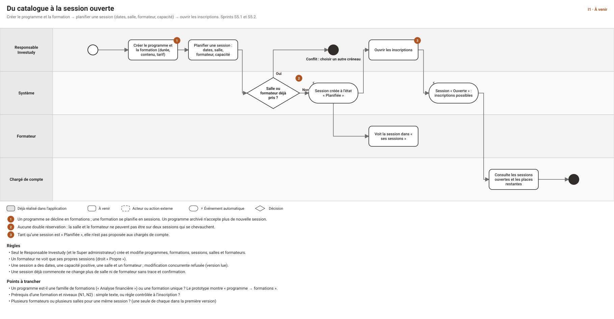
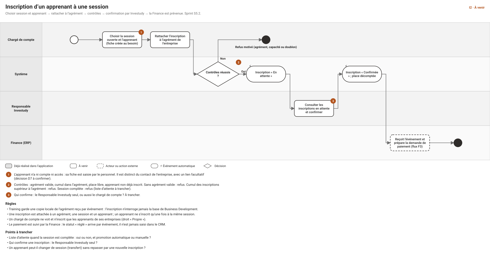
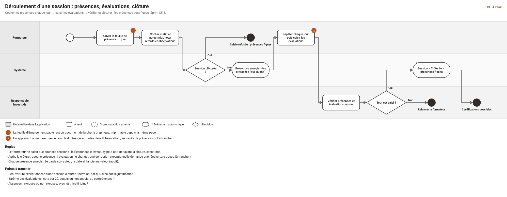
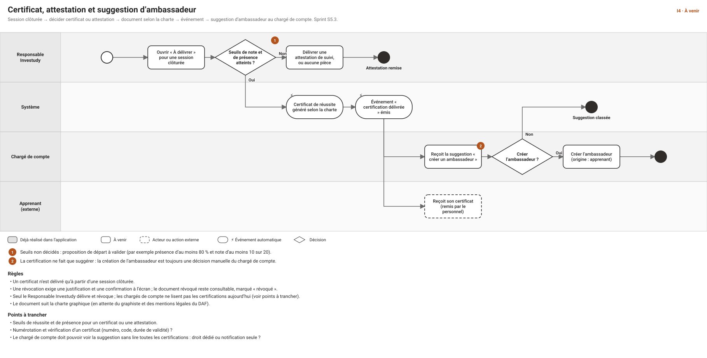
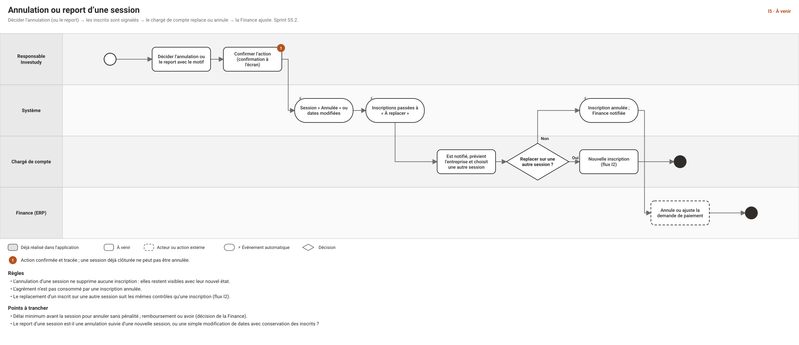

Cas d'usage et workflows — module Investudy (formation)
Date : 2026-10-30 · Statut : proposition à valider · Suite de : CAS-D-USAGE-MODULE-COMMERCIAL.md et CAS-D-USAGE-FLUX-TRANSVERSES.md (flux F2) · Schémas : workflows/index.html (flux I1 à I5) · Écrans : wireframes 26 à 32 et 36
Le module Investudy commence là où le module commercial s'arrête : un agrément reçu. Il couvre le catalogue, les ressources (salles, formateurs), les sessions, les apprenants, les inscriptions, les présences, les évaluations et les certifications. Rien n'est décidé ici : les points « à trancher » sont ceux de la direction produit, et chaque valeur proposée est une hypothèse de travail. Aucun écran n'est réalisé : tout le module est à venir (sprints S5.1 à S5.3, tableau de bord en S6.2).
0. Vocabulaire
| Terme | Sens retenu |
|---|---|
| Programme | Famille de formations (ex. « Analyse financière »). Peut être archivé. |
| Formation | Contenu précis d'un programme (durée, objectifs, tarif de référence). |
| Session | Occurrence datée d'une formation, avec une salle, un formateur et une capacité. |
| Apprenant | Personne qui suit une formation. N'a ni compte ni accès à l'application : sa fiche est saisie par le personnel. Entité distincte du contact d'une entreprise, avec un lien facultatif (décision D7 à confirmer). |
| Inscription | Lien entre un apprenant, une session et un agrément. |
| Agrément | Promesse de paiement donnée par le client (module commercial). Investudy en garde une copie locale reçue par événement et refuse toute inscription sans agrément valide. |
| Certificat / attestation | Certificat de réussite, ou attestation de suivi. Le document suit la charte graphique. |
1. Droits actuels du module (rappel de la matrice RBAC)
| Objet | Chargé de compte | Responsable commercial | Responsable Investudy | Formateur | Direction, Support, Finance |
|---|---|---|---|---|---|
| Programme | lire | lire | lire, créer, modifier, archiver | lire | Direction : lire |
| Formation | — | — | lire, créer, modifier | — | Direction : lire |
| Session | lire | lire | tout (créer, modifier, annuler, clôturer) | lire ses sessions | Direction, Support, Finance : lire |
| Salle, formateur (ressources) | — | — | gérer | lire les salles | — |
| Apprenant | lire, créer, modifier (Propre : ses entreprises) | lire (Équipe) | tout, supprimer compris | lire (ses sessions) | Direction, Support : lire |
| Inscription | lire, créer (Propre) | lire (Équipe) | tout (créer, modifier, annuler) | — | Direction, Support, Finance : lire |
| Présence, évaluation | — | — | lire, saisir | lire, saisir (ses sessions) | Direction : lire |
| Certification | — (aucun droit) | lire (Équipe) | lire, délivrer, révoquer | lire (ses sessions) | Direction : lire |
Le Super administrateur détient tous ces droits. Les détails sont dans RBAC.md.
2. Les cinq flux du module
Chaque schéma est dans workflows/svg/.





3. Catalogue : programmes et formations (flux I1, S5.1, écran 26)
CU-I-01 — Créer un programme
- Acteur : Responsable Investudy. Scénario : 1. « Nouveau programme ». 2. Nom (obligatoire, unique), description, public visé. 3. Enregistrer : le programme est « Actif ».
- Variantes : nom déjà pris → conflit ; champs non conformes en surbrillance avec message. Droits :
training.program.create. État : à venir.
CU-I-02 — Ajouter une formation à un programme
- Scénario : dans le programme, « Nouvelle formation » : intitulé, durée en jours, objectifs, prérequis (texte), tarif de référence (FCFA par défaut), documents (support de cours). Règle : une formation appartient à un seul programme. Droits :
training.training.create / update. - À trancher : les prérequis sont-ils un simple texte ou une règle contrôlée à l'inscription ?
CU-I-03 — Modifier ou archiver un programme
- Scénario : modification avec version lue contrôlée ; archivage avec confirmation. Règle : un programme archivé n'accepte plus de nouvelle session ; les sessions existantes se poursuivent. Droits :
training.program.update / archive.
CU-I-04 — Consulter le catalogue
- Acteur : Responsable Investudy, Formateur, Chargé de compte, Responsable commercial, Direction. Scénario : cartes ou liste des programmes, recherche, filtre actif ou archivé ; détail d'une formation avec ses prochaines sessions. Droits :
training.program.read. - Note : l'affichage en cartes de l'écran 26 est prévu pour le catalogue ; le choix cartes ou tableau pour les entreprises est traité à part (décision D30).
4. Ressources : salles et formateurs (S5.1, écran 26)
CU-I-10 — Gérer les salles
- Acteur : Responsable Investudy. Scénario : liste des salles (nom, capacité, équipements, active ou non) ; création, modification, désactivation. Règle : une salle désactivée n'est plus proposée à la planification mais reste visible sur les sessions passées. Droits :
training.room.manage; lecture :training.room.read(le formateur aussi).
CU-I-11 — Gérer les formateurs
- Acteur : Responsable Investudy. Scénario : fiche formateur (nom, spécialités, coordonnées, lien vers son compte utilisateur s'il en a un). Règle : pour qu'un formateur voie « ses sessions » et saisisse ses présences, sa fiche doit être rattachée à un compte au rôle Formateur. Droits :
training.trainer.manage / read. - À trancher : un formateur externe sans compte est-il autorisé (la saisie est alors faite par le Responsable Investudy) ?
CU-I-12 — Vérifier la disponibilité
- Scénario : à la planification, le système indique les salles et formateurs libres sur les dates choisies. Règle : voir CU-I-20. État : à venir.
5. Sessions (flux I1 et I5, S5.2, écrans 27 et 28)
CU-I-20 — Planifier une session
- Acteur : Responsable Investudy. Écran : 27. Scénario : 1. « Nouvelle session ». 2. Formation, dates de début et de fin, salle, formateur, capacité. 3. Le système contrôle le chevauchement. 4. La session est créée « Planifiée ».
- Variantes : salle ou formateur déjà pris sur ces dates → refus, avec la session en conflit ; capacité supérieure à celle de la salle → avertissement (à trancher : bloquant ?) ; dates dans le passé → refus. Droits :
training.session.create.
CU-I-21 — Ouvrir les inscriptions
- Scénario : « Ouvrir » : la session passe « Ouverte » et devient visible des chargés de compte, avec les places restantes. Règle : ouverte seulement si salle, formateur et capacité sont renseignés. Droits :
training.session.update.
CU-I-22 — Modifier une session
- Règles : version lue contrôlée ; une session commencée ne change plus de salle ni de formateur sans confirmation et trace ; une réduction de capacité en dessous du nombre d'inscrits confirmés est refusée.
CU-I-23 — Annuler ou reporter une session (flux I5)
- Acteur : Responsable Investudy. Scénario : 1. « Annuler » ou « Modifier les dates », motif obligatoire. 2. Confirmation à l'écran. 3. Les inscriptions passent à « À replacer » ; les chargés de compte concernés sont notifiés. 4. Chaque chargé de compte replace l'inscrit sur une autre session (nouveau contrôle, flux I2) ou l'annule ; la Finance est prévenue pour ajuster la demande de paiement.
- Règles : une session clôturée ne s'annule pas ; l'annulation ne supprime aucune inscription ; l'agrément n'est pas consommé par une inscription annulée. Droits :
training.session.cancel. - À trancher : le report est-il une annulation suivie d'une nouvelle session, ou une modification de dates qui conserve les inscrits ? Délai minimal et conséquences financières (décision de la Finance).
CU-I-24 — Consulter le calendrier et la liste des sessions
- Écran : 27. Scénario : liste filtrable (état, salle, formateur, période) et vue calendrier ; compteur « inscrits / capacité ». Droits :
training.session.read(le formateur ne voit que les siennes, Propre).
CU-I-25 — Consulter le détail d'une session
- Écran : 28. Scénario : indicateurs (inscrits, présence moyenne, évaluations saisies, agrément) et onglets Inscrits, Présences, Évaluations, Documents. Droits : selon l'onglet (voir § 1).
CU-I-26 — Clôturer une session (flux I3)
- Acteur : Responsable Investudy. Scénario : vérifier les présences et évaluations saisies, puis « Clôturer » (confirmation). Résultat : les présences et évaluations sont figées ; la session ouvre droit aux certifications ; événement « session clôturée ». Droits :
training.session.close. - À trancher : réouverture exceptionnelle (qui, motif, trace).
6. Apprenants (S5.2, écran 29)
CU-I-30 — Créer la fiche d'un apprenant
- Acteur : chargé de compte (pour ses entreprises), Responsable Investudy. Scénario : nom, prénom, entreprise, e-mail et téléphone (facultatifs, contrôlés), lien facultatif vers un contact de l'entreprise. Variantes : doublon probable (même entreprise et même nom ou e-mail) signalé avec « Créer quand même », comme pour les contacts. Droits :
training.learner.create(Propre pour le chargé de compte).
CU-I-31 — Modifier un apprenant
- Règles : version lue contrôlée, audit avant/après ; l'entreprise ne change pas (ou seulement par le Responsable Investudy, à trancher). Droits :
training.learner.update.
CU-I-32 — Consulter les apprenants et leur parcours
- Scénario : liste filtrable par entreprise ; fiche avec formations suivies, présences, certifications. Droits : portée de l'entreprise pour le chargé de compte (Propre), Équipe pour le Responsable commercial, Tous pour Investudy, Direction et Support ; le formateur ne voit que les apprenants de ses sessions.
CU-I-33 — Supprimer un apprenant
- Acteur : Responsable Investudy seulement (
training.learner.delete). Suppression logique avec confirmation ; refusée si l'apprenant a une inscription confirmée ou une certification. Point sensible : durée de conservation des données personnelles des apprenants (D11, même sujet que D55 et D65).
7. Inscriptions (flux I2, S5.2, écrans 28 et 30)
CU-I-40 — Inscrire un apprenant à une session
- Acteur : chargé de compte. Écran : 30. Préconditions : session « Ouverte » ; agrément valide pour l'entreprise.
- Scénario : 1. Session, apprenant (créé au besoin), agrément, prise en charge, commentaire. 2. Le système vérifie : agrément valide, cumul des inscriptions dans le montant ou le nombre de places de l'agrément, place libre, apprenant non déjà inscrit. 3. L'inscription est créée « En attente de confirmation ».
- Variantes : sans agrément valide → refus ; cumul supérieur → refus ; session complète → refus (liste d'attente à trancher). Droits :
training.enrollment.create(Propre).
CU-I-41 — Confirmer une inscription
- Acteur : Responsable Investudy. Scénario : file des inscriptions en attente (écran 28), « Confirmer » ; la place est décomptée ; événement « inscription confirmée » vers la Finance (demande de paiement, flux F3). Droits :
training.enrollment.update. - À trancher : le chargé de compte peut-il confirmer lui-même ? (proposition : non, pour garder un contrôle de capacité).
CU-I-42 — Annuler une inscription
- Scénario : « Annuler » avec motif et confirmation ; la place est libérée, l'agrément n'est plus consommé, la Finance est prévenue. Règle : une inscription d'une session clôturée ne s'annule pas. Droits :
training.enrollment.cancel.
CU-I-43 — Replacer un inscrit sur une autre session
- Scénario : depuis une inscription « À replacer » (flux I5) ou à la demande ; mêmes contrôles qu'à CU-I-40 ; l'ancienne inscription est annulée avec le lien vers la nouvelle. À trancher : transfert direct sans nouvelle inscription ?
CU-I-44 — Gérer la liste d'attente (si retenue)
- Scénario : à session complète, l'inscription est mise « En liste d'attente » avec un rang ; quand une place se libère, le Responsable Investudy (ou le système) promeut le premier rang. À trancher : liste d'attente oui ou non, promotion manuelle ou automatique.
CU-I-45 — Suivre l'état de paiement
- Scénario : l'état « réglé » d'une inscription arrive de la Finance par événement et s'affiche en lecture seule dans la session et la fiche entreprise. Règle : jamais saisi dans le CRM.
8. Présences et évaluations (flux I3, S5.3, écran 31)
CU-I-50 — Enregistrer les présences du jour
- Acteur : formateur (ses sessions), Responsable Investudy. Scénario : 1. Feuille du jour (écran 31). 2. Pour chaque inscrit confirmé : matin, après-midi, retard, observation. 3. Enregistrer.
- Règles : session clôturée → saisie refusée ; seuls les inscrits confirmés apparaissent ; chaque saisie garde auteur, date et ancienne valeur. Droits :
training.attendance.record(Propre pour le formateur).
CU-I-51 — Imprimer la feuille d'émargement
- Scénario : « Imprimer » produit un document de la charte, signé à la main par les participants, puis numérisé et joint à la session (module Documents). État : à venir ; dépend de la charte et du rendu PDF (D61).
CU-I-52 — Saisir les évaluations
- Acteur : formateur, Responsable Investudy. Scénario : à la fin de la formation, une évaluation par apprenant (note ou résultat) et un commentaire. Règle : figée à la clôture. Droits :
training.evaluation.record. À trancher : barème.
CU-I-53 — Consulter présences et évaluations
- Droits :
training.attendance.read,training.evaluation.read(Direction : tous ; formateur : ses sessions).
CU-I-54 — Corriger une saisie
- Avant la clôture : le Responsable Investudy ou le formateur corrige, avec trace. Après la clôture : réouverture exceptionnelle tracée (à trancher).
9. Certifications et attestations (flux I4, S5.3, écran 32)
CU-I-60 — Délivrer un certificat ou une attestation
- Acteur : Responsable Investudy. Préconditions : session clôturée. Scénario : 1. Onglet « À délivrer ». 2. Pour chaque apprenant : certificat de réussite (seuils atteints), attestation de suivi, ou rien. 3. Le document est généré selon la charte. 4. Événement « certification délivrée ».
- Règle : seuils proposés pour démarrer (à valider) : présence d'au moins 80 % et note d'au moins 10 sur 20 pour un certificat ; présence d'au moins 80 % seulement pour une attestation. Droits :
training.certification.issue.
CU-I-61 — Révoquer une certification
- Scénario : « Révoquer » avec justification obligatoire et confirmation. Règle : le document reste consultable, marqué « révoqué » ; événement « certification révoquée ». Droits :
training.certification.revoke.
CU-I-62 — Recevoir la suggestion d'ambassadeur
- Acteur : chargé de compte. Scénario : après une certification délivrée, il reçoit une suggestion (écran 24) ; il décide manuellement de créer l'ambassadeur (origine : apprenant). Règle : jamais automatique.
- Constat : le chargé de compte n'a aucun droit de lecture sur les certifications dans la matrice actuelle. Il lui faut soit un droit de lecture limité aux apprenants de ses entreprises (
training.certification.read, Propre), soit une suggestion portée par l'événement seul, sans accès à la certification. À trancher.
CU-I-63 — Consulter les certifications
- Droits : Responsable Investudy, Direction : tous ; Responsable commercial : son équipe ; formateur : ses sessions.
CU-I-64 — Vérifier un certificat
- À trancher : numéro unique, code de vérification et page publique de contrôle (hors périmètre actuel : l'application n'a aucun accès externe).
10. Pilotage (S6.2, écran 36)
CU-I-70 — Tableau de bord Investudy
- Acteur : Responsable Investudy, Direction (
reporting.dashboard.training). Contenu proposé : taux de remplissage des sessions à venir, inscriptions en attente, taux de présence, certificats délivrés par mois, inscriptions par entreprise. État : à venir (S6.2) ; les chiffres viennent des mêmes données que les écrans.
CU-I-71 — Exporter une liste
- Scénario : export des inscrits d'une session ou de la liste des apprenants, tracé comme tout export, limité à la portée de l'utilisateur ; confirmation récente du second facteur (option C, à confirmer). Droits : à créer (
training.*.export).
11. Événements échangés
| Sens | Événement | Effet |
|---|---|---|
| Reçu du module commercial | Agrément accordé, expiré, annulé | Copie locale de l'agrément ; les inscriptions non réglées d'un agrément expiré ou annulé sont signalées |
| Émis vers la Finance | Inscription confirmée / annulée | Demande de paiement préparée / ajustée (flux F3) |
| Émis vers la Finance | Session annulée | Ajustement des demandes de paiement |
| Émis vers le module commercial | Certification délivrée / révoquée | Suggestion d'ambassadeur au chargé de compte |
| Émis vers le reporting | Session clôturée | Mise à jour des indicateurs |
12. Permissions et données à prévoir
| Besoin | Proposition |
|---|---|
| Lecture des suggestions d'ambassadeur par le chargé de compte | training.certification.read limité aux apprenants de ses entreprises, ou notification seule |
| Réouverture d'une session clôturée | permission dédiée training.session.reopen (Responsable Investudy), avec justification |
| Liste d'attente | statut d'inscription supplémentaire ; pas de permission nouvelle |
| Rattacher un formateur à un compte | champ « compte utilisateur » sur la fiche formateur |
| Export des listes | permission d'export par ressource, comme pour les entreprises |
| Documents (émargement, certificats) | module Documents existant, rattaché à la session ou à la certification |
| Entités de données | programme, formation, session, salle, formateur, apprenant, inscription, présence, évaluation, certification (à modéliser en S5.1) |
13. Points à trancher, par ordre d'impact
- Confirmation des inscriptions : le Responsable Investudy seul ? (I2)
- Liste d'attente quand la session est complète : oui ou non, promotion manuelle ou automatique (I2).
- Seuils de certification : présence, note, et différence certificat ou attestation (I4).
- Apprenant et contact : entité distincte avec lien facultatif ? (D7)
- Agrément : places ou somme globale, expiration et effet sur les inscriptions (D1, F1).
- Barème des évaluations : note sur 20, acquis ou non, compétences (I3).
- Annulation et report : modifier les dates ou annuler puis recréer ; délais et conséquences financières (I5).
- Réouverture d'une session clôturée (I3).
- Visibilité des certifications pour le chargé de compte (I4, CU-I-62).
- Conservation des données des apprenants : durée et base légale (D11, D65).
- Numérotation et vérification des certificats (CU-I-64).
14. Découpage proposé
| Sprint | Contenu |
|---|---|
| S5.1 | Catalogue (programmes, formations), salles, formateurs ; modèle de données Investudy |
| S5.2 | Sessions, apprenants, inscriptions (avec les contrôles d'agrément et de capacité), annulation et report ; réception des événements d'agrément |
| S5.3 | Présences, évaluations, clôture, certifications et attestations ; émission des événements |
| S6.2 | Tableau de bord Investudy |
15. Suite proposée
Après validation : retour au module commercial pour S4.2 (offres, décharges, relances), puis S4.3 (opportunités) qui produit l'agrément attendu par Investudy ; ensuite Reporting, Stocks, Finance, RH et fiscalité.